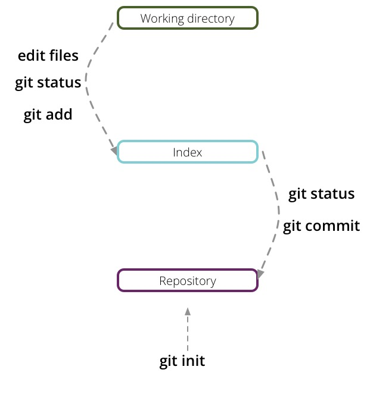

git
The time machine
what what?
Why time machine?
Why time machine?
Magic solution
Version control systems
- git
- mercurial(hg)
- bazaar
- subversion
- concurrent version system
- perforce
- visual source safe
git
- Open source
- Distributed
- Designed for speed and efficiency
Everything is local (almost)

Lets do it
- Install git
- Intial setup
git config --global user.name "Kiru Samapathy"
git config --global user.email ksama@tw.com
git help
Creating a new repo
Getting an existing repo
Basic Workflow

Basic Workflow
Branching and Merging
- Non linear development
- Try a new idea
- Isolate work units
- Production hot fixes
Finally.... sharing
- Non linear development
- Try a new idea
- Isolate work units
- Production hot fixes
In Summary...
- Create a local repository
In Summary...
- Create a local repository
git init
In Summary...
- Create a local repository
- Add files to staging aread
git init
In Summary...
- Create a local repository
- Add files to staging aread
git init
git add filename